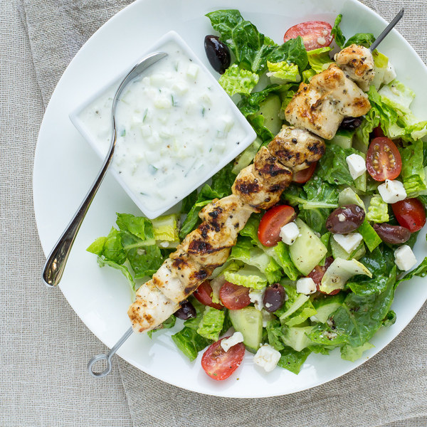

Chicken Kebabs with Greek Salad & Tzatziki Sauce

An Easy-to-make mediterranean meal
This meal consists of chicken kebabs, greek salad with feta cheese and kalamata olives, and tzatziki sauce.
Cooking time should be around 40 minutes. This recipe accounts for 4 servings.
With zesty and tangy flavors, along with sweet yet savory hints of the mediterranean sea, this meal will transport you all the way to Greece!
Ingredients
- 1 lb chicken breast, boneless, skinless
- 4 oz crumbled feta cheese
- 1 English Cucumber
- 6 cloves of garlic
- 1/2 cup of kalamata olives
- 1 lemon
- 1 cup plain greek yogurt
- 1 head romaine lettuce
- salt
- black pepper
- extra virgin olive oil
- oregano, dried
- red wine vinegar
Steps
- Peel and mince the garlic.
- In a small bowl, whisk together the minced garlic, lemon juice, olive oil, vinegar, oregano, salt, and pepper.
Cube the chicken and transfer to a medium bowl. Pour half of the dressing over top (save the rest for the salad) and toss to coat.
Heat a grill pan, outdoor grill, or skillet over medium-high heat.
- Thread the chicken onto 4 skewers. Alternatively, you can cook the chicken pieces directly on the grill/skillet without using skewers.
- Add the chicken to the grill or skillet and cook, turning occasionally, until cooked through, 8-10 minutes.
- Wash and dry the fresh produce.
- Finely dice ¼ of the cucumber. Peel and mince the remaining garlic. In a small bowl, prepare the tzatziki sauce by mixing together the cucumber, garlic, lemon juice, yogurt, and salt.
- Halve the lettuce lengthwise, then chop crosswise into 1 inch strips; transfer to a salad bowl. Quarter the remaining cucumber lengthwise, then cut crosswise into chunks; add to the bowl. Halve the tomatoes; add to the bowl.
- Add the olives, feta, and reserved dressing to the salad and toss.
- To serve, place salad on a plate and add a chicken skewer on top. Serve with tzatziki sauce and enjoy!